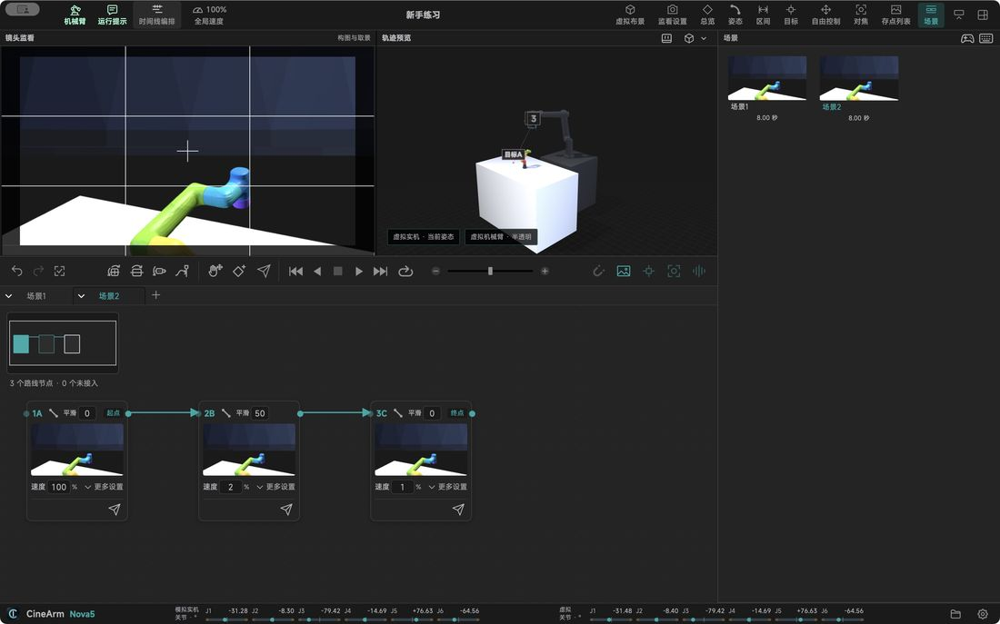

功能详解 / 节点编排：用卡片看复杂镜头
节点编排：用卡片看复杂镜头
复杂镜头用卡片连线看，比在时间轴上数点更快。
卡片即机位一张卡一个机位，连线就是路线。
一眼看出类型卡片直接标出这一段是关节、直线还是圆弧。
单独定速每张卡可以有自己的到达速度。
经过即停需要时能在该位置停住，不用回到原点。
一键过去点一下就把机械臂沿当前路线送到该节点。
整理与复用自动排版、批量复制属性，接头重接后还能继续改。

本页内容对应 CineArm v0.1.46。